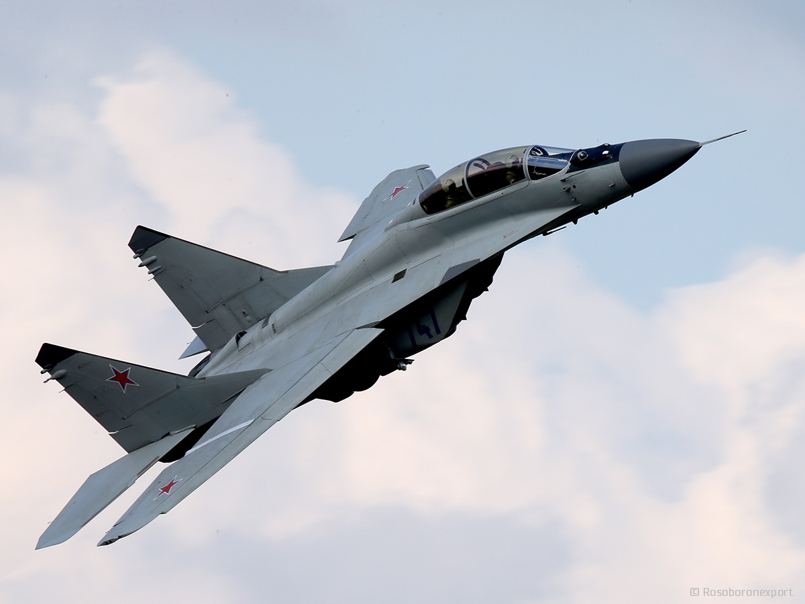
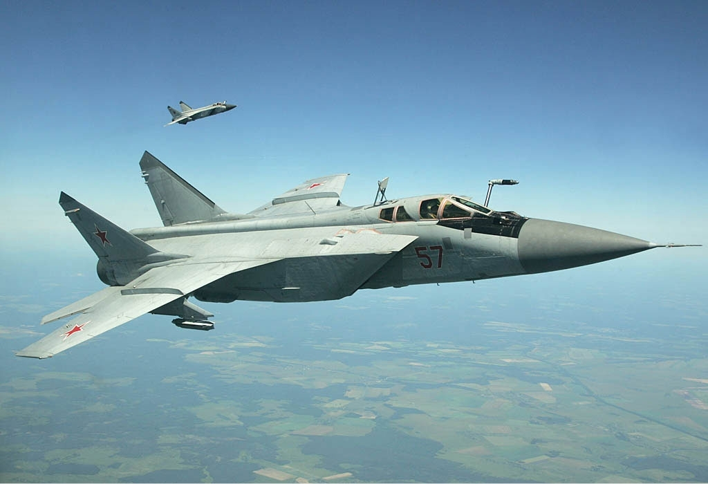
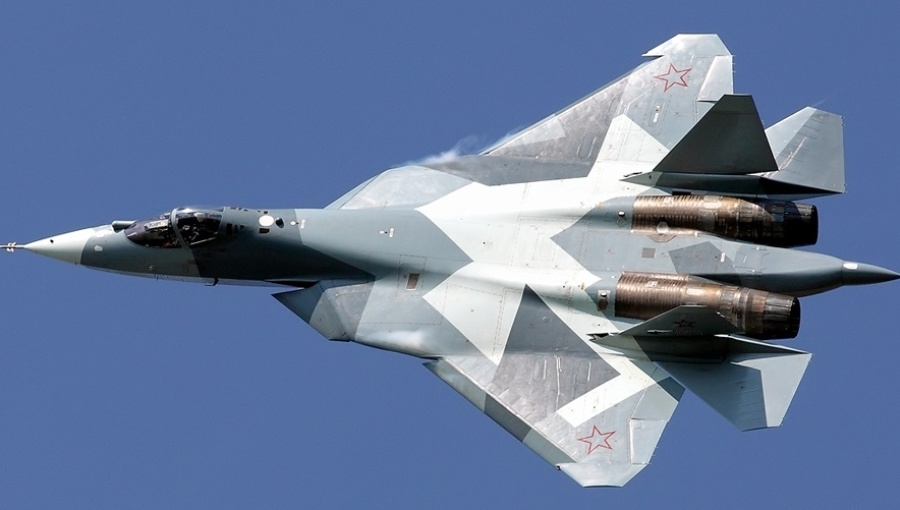
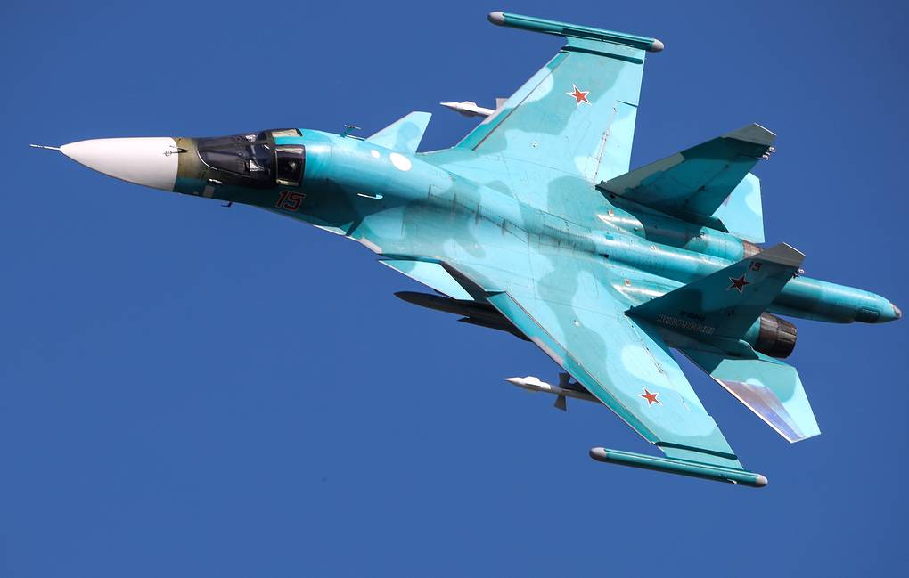
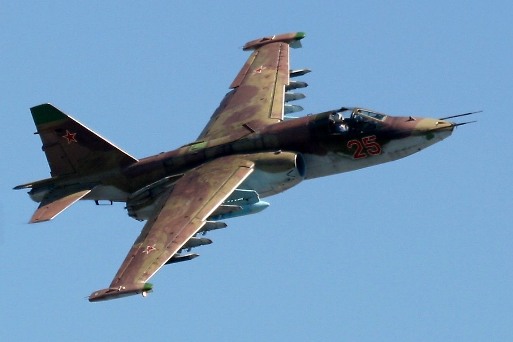

Nato Designations
*Rusian Made aircaft can be refered to by their nato designations as noted in quotation marks ""*
- Mig-35 "Fulcrum"

The Mig-35 is a Russian Multirole fighter much like the american f-18 in that it can be carrier based and can be used for a variety of different attack functions.
- Mig-31 "Foxhound"

The Mig-31 is a supersonic interceptor. Its fast but unmaneuverable and is on the verge of being replaced.
- Su-57 "Felon"

The Su-57 is Russias most advanced fighter only recently exiting its prototype stage and entering production, it has stealth and supermaneuverability capabilites.
- Su-34 "Fullback"

The Su-34 is a Russian Fighter-Bomber made for use against air, gorund, and naval targets.
- su-25 "Frogfoot"

The su-25 is a Russian Close air support Aircraft initally built and used by the soviet union but upgraded versions still serve as Russias primary CAS aircraft.